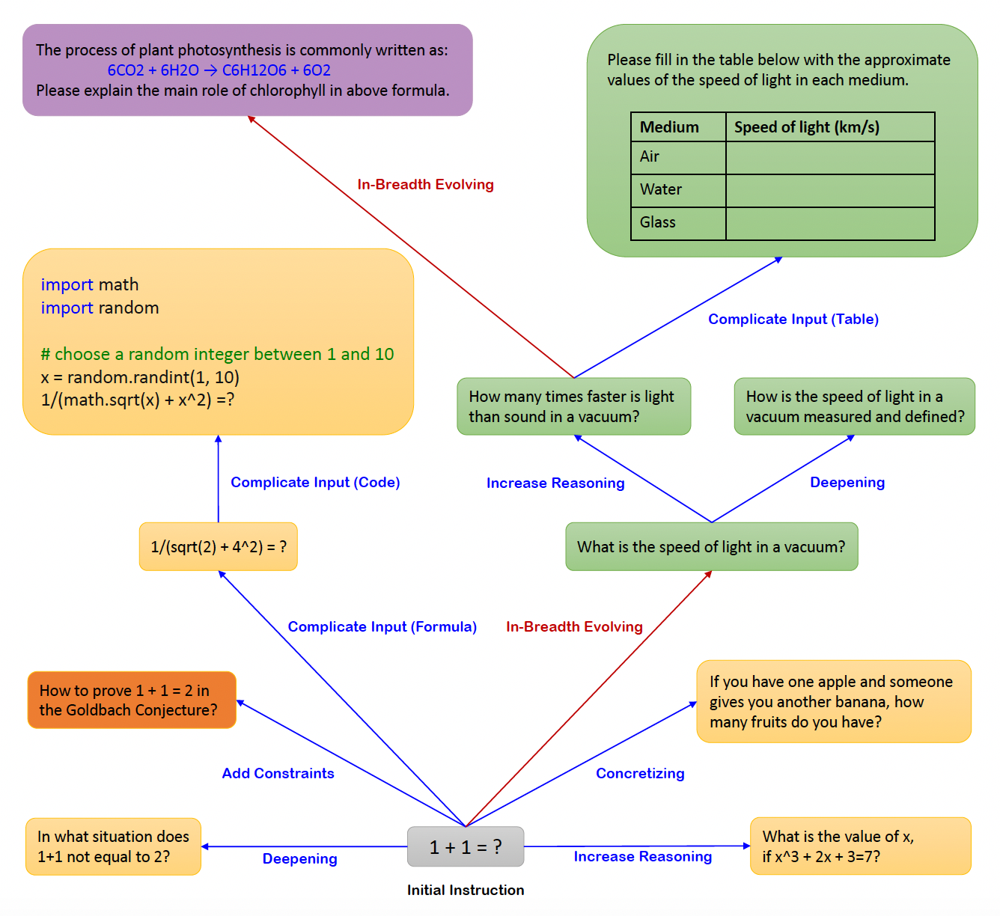
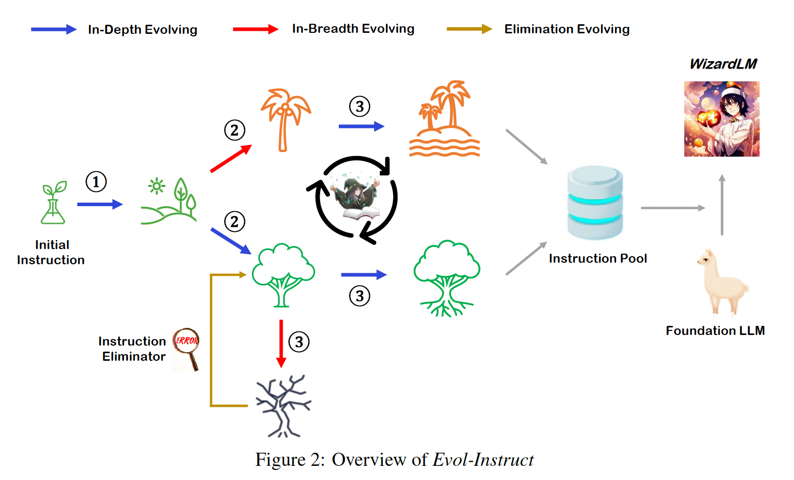

WizardLM#
By using open-domain instruction data generated by real human users, OpenAI’s LLMs have achieved great success. However, the whole annotating process is extremely expensive and time-consuming, on the other hand, the difficulty level distribution of human-created instructions is skewed towards being easy or moderate, with fewer difficult ones.
In this work, we introduce Evol-Instruct, a novel method using LLMs instead of humans to automatically mass-produce open-domain instructions of various difficulty levels.

Starting from a simple initial instruction “1+1=?”, our method randomly selects In-depth Evolving (blue direction line) or In-breadth Evolving (red direction line) to upgrade the simple instruction to a more complex one or create a new one (to increase diversity). The In-depth Evolving includes five types of operations: add constraints, deepening, concretizing, increase reasoning steps, and complicate input. The In-breadth Evolving generating a completely new instruction based on the given instruction. These six operations are implemented by prompting an LLM with specific prompts.
Approach#
We start the evolution from a given initial instruction dataset \(D^{(0)} = (I^{(0)}_{k}, R^{(0)}_{k})_{1\le k\le N}\), where \(I^{(0)}_{k}\) is the \(k\)-th instruction in \(D^{(0)}\), \(R^{(0)}_{k}\) is the corresponding response for the \(k\)-th instruction, and \(N\) is the number of samples in \(D^{(0)}\).
In each evolution, we upgrade all the \(I^{(t)}\) in \(D^{(t)}\) to \(I^{(t+1)}\) by applying a LLM instruction evolution prompt, and then use the LLM to generate corresponding responses \(R^{(t+1)}\) for the newly evolved \(I^{(t+1)}\). Thus, we obtain an evolved instruction dataset \(D^{(t+1)}\)

Prompts of In-Depth Evolving. e.g. add constraints:
I want you act as a Prompt Rewriter.
Your objective is to rewrite a given prompt into a more complex version to make those famous AI systems
(e.g., ChatGPT and GPT4) a bit harder to handle.
But the rewritten prompt must be reasonable and must be understood and responded by humans.
Your rewriting cannot omit the non-text parts such as the table and code in #Given Prompt#:. Also, please
do not omit the input in #Given Prompt#.
You SHOULD complicate the given prompt using the following method:
Please add one more constraints/requirements into #Given Prompt#
You should try your best not to make the #Rewritten Prompt# become verbose, #Rewritten Prompt# can only
add 10 to 20 words into #Given Prompt#.
‘#Given Prompt#’, ‘#Rewritten Prompt#’, ‘given prompt’ and ‘rewritten prompt’ are not allowed to appear in
#Rewritten Prompt#
#Given Prompt#:
<Here is instruction.>
#Rewritten Prompt#:
Prompts of In-Breadth Evolving.
I want you act as a Prompt Creator.
Your goal is to draw inspiration from the #Given Prompt# to create a brand new prompt.
This new prompt should belong to the same domain as the #Given Prompt# but be even more rare.
The LENGTH and difficulty level of the #Created Prompt# should be similar to that of the #Given Prompt#.
The #Created Prompt# must be reasonable and must be understood and responded by humans.
‘#Given Prompt#’, ‘#Created Prompt#’, ‘given prompt’ and ‘created prompt’ are not allowed to appear in
#Created Prompt#.
#Given Prompt#:
<Here is instruction.>
#Created Prompt#:
Response Generation. We use the same LLM as for evolving to generate the corresponding responses for the evolved instructions.
Elimination Evolving.
The evolved instruction does not provide any information gain compared to the original one. We use ChatGPT to make this determination
The evolved instruction makes it difficult for the LLM to generate a response. We found that when the generated response contains “sorry” and is relatively short in length, it often indicates that the LLM struggles to respond to the evolved instruction. So we can use this rule to make a judgment.
The response generated by the LLM only contains punctuation and stop words.
The evolved instruction obviously copies some words from the evolving prompt, such as “given prompt”, “rewritten prompt”, “#Rewritten Prompt#”, etc.
Finetuning the LLM on the Evolved Instructions. Once all evolutions are done, we will merge the initial instruction dataset with evolved instruction
data from all epochs and randomly shuffle the samples to create the final fine-tuning dataset. This
processing ensures even distribution of instructions of varying difficulty levels in the dataset, maximizing
model fine-tuning smoothness.